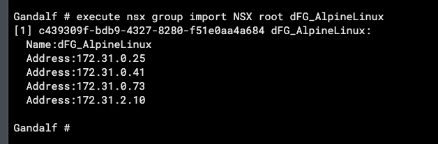
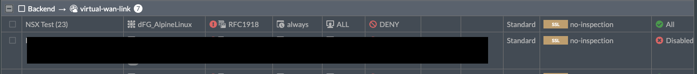
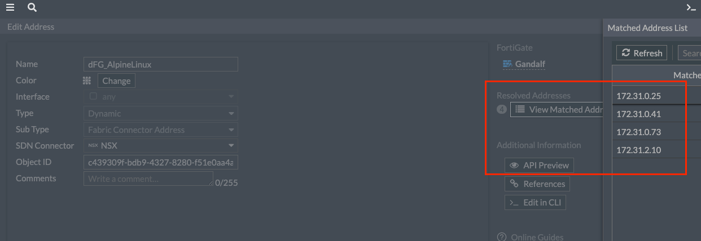
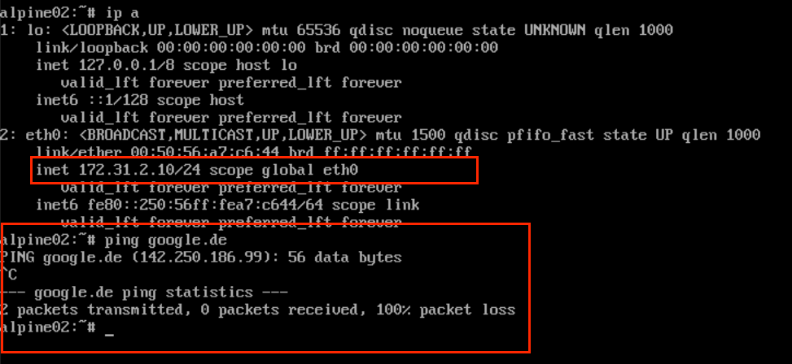
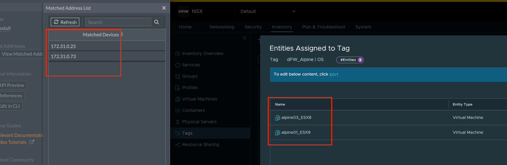
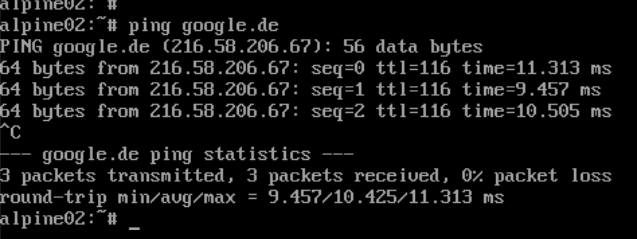
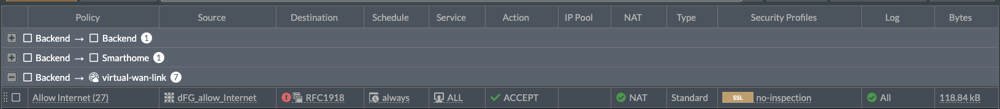

Nsx Integration Fortigate
735 Words Words // ReadTime 3 Minutes, 20 Seconds
2024-08-26 20:49 +0200
NSX integration for Fortinet Fortigate Firewalls
Modern SDN solutions are flexible, fast and effective. The rules of the classic perimeter firewall should be exactly the same. To make life easier, Fortinet has an NSX integration that allows us to write our perimeter rules to dynamic NSX groups.
First things first
The Fortinet NSX integration works via a so-called external connector. For this purpose, the Fortigate contacts the NSX Manager at regular intervals and updates the previously imported groups. This allows us to use dynamic groups that were previously created in NSX using tags, for example.
First we need to configure our connector. To do this, go to the Fortigate at Security Fabric / External Connectors and click on Create New.

Here we need to enter our NSX Manager, if we have an NSX Manager Cluster then of course the Cluster VIP or FQDN is needed. We can define an update interval, this determines how long it takes to update the groups on the Fortigate. In my lab I chose 30 seconds, depending on the environment lower or higher values may make sense. In a productive environment, the certificate should always be verified. In my homelab environment I deliberately turned this off.

Importing the dynamic NSX groups
The groups need to be imported via the Fortigate CLI. This is relatively easy to do for all groups and specifically for individual groups. Groups imported this way will be automatically updated in the future. If new groups are configured in NSX, they must be imported via the CLI if they play a role in the rules.
If you want to import all NSX groups, you need to omit the group name in the CLI call. In the screenshot you can see me importing the dFG_AlpineLinux NSX group. This uses an NSX tag to combine all VMs of type Alpine Linux into one security group.

In the Fortigate, you can now find the group under Policy & Objects / Addresses and use it like any other group in firewall policies. The NSX groups can be used not only for firewall rules, but also for policy-based routing via the SD-WAN feature.

In my example, I am prohibiting the Alpine Linux VMs from accessing the Internet. The current realised group assignment can be checked at any time via Policy & Objects> / Addresses and a double click on the group.

Delete groups
Groups need to be deleted manually. The easiest way to do this is via the Fortigate CLI. To do this, execute the following CLI command:
If you want to delete all groups, you can simply leave the filter empty. If a group is used in a firewall policy, it cannot be deleted and you will receive a message that the group is in use.
Testing the solution
To do this, I log on to the Alpine2 VM and check the current IP. The VM has currently been assigned 172.31.2.10. We can also find this on the Fortigate in our dFG_AlpineLinux group. I am trying to send an ICMP to the Internet, which is blocked by the Fortigate firewall as expected.

Next, I remove the Alpine Linux tag in the NSX, which ensures that the VM is no longer realised in the dFG_Alpine Linux group on the Fortigate after 30 seconds at the latest.

Finally, I repeated my ping test. As expected, Internet access is now without any problems.

Remarks
If the connection to NSX Manager is interrupted, group membership remains at the last synchronised state. This means that in highly dynamic environments, too much or too little traffic may be allowed or blocked. For this reason, the SDN connection should always be monitored. All group changes are saved in the Log SDN Connector Log of the Fortigate.
Use cases
One conceivable scenario would be to enable a dynamic firewall for VMs that are allowed to access the Internet. This can be done in NSX using a tag and a group. Every VM that does not have a tag and is therefore not in the group will be blocked at the Fortigate perimeter firewall.

The firewall rule allows everything that does not go into RFC1918 networks (private IP range). Of course, this is only a simple example and more complex setups are possible.